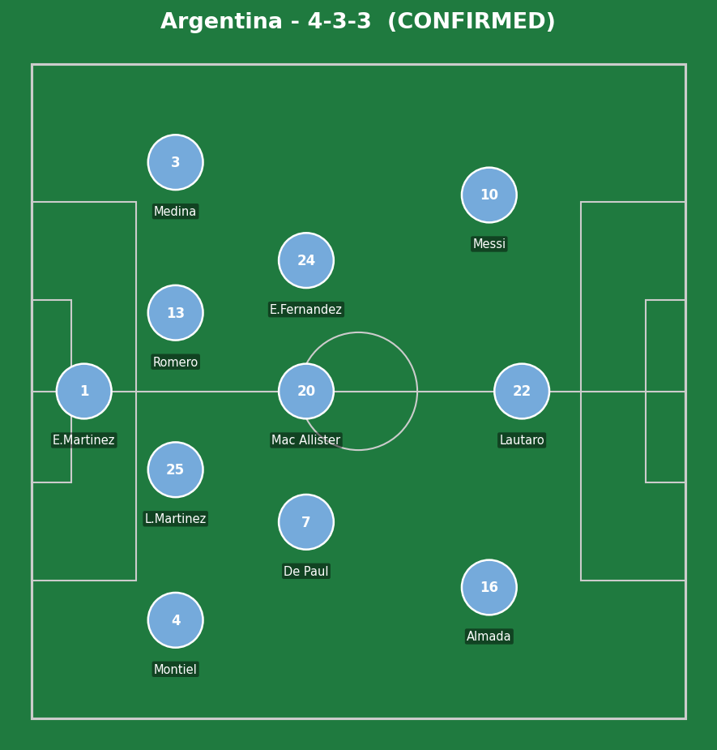
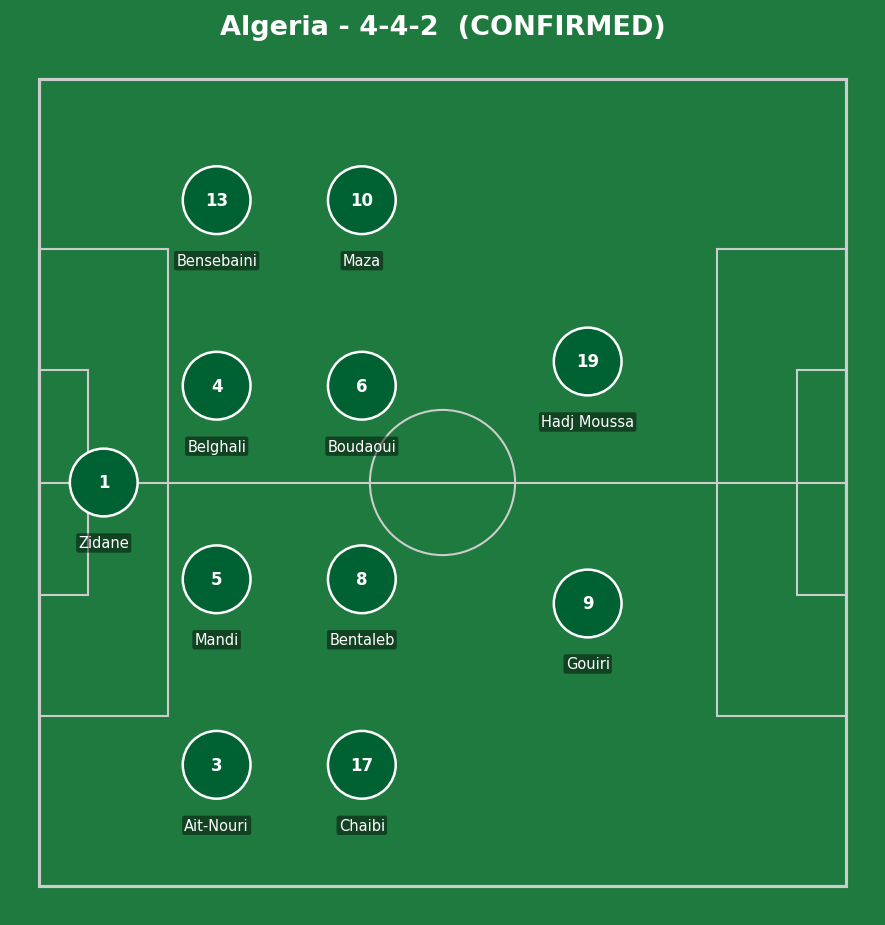
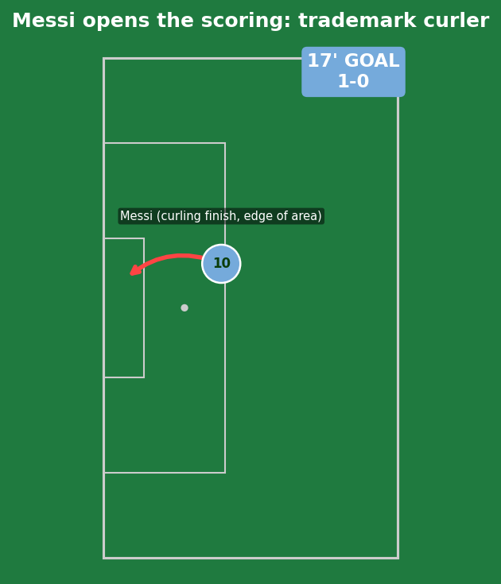
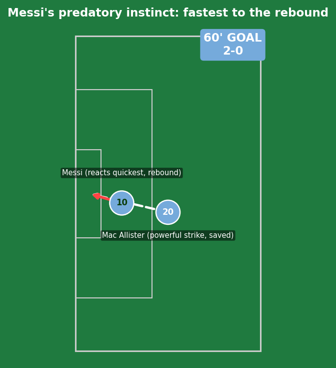
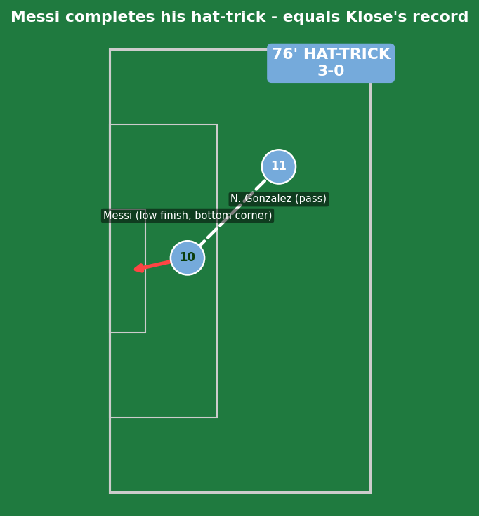
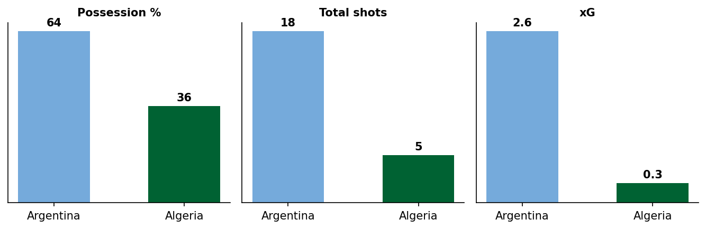
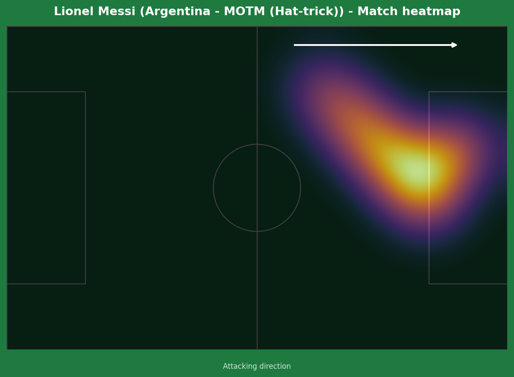
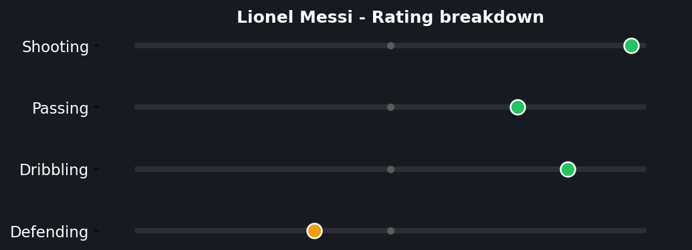
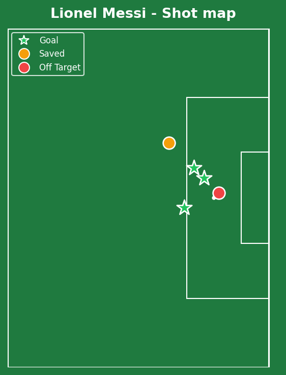

Argentina opened their title defence in the perfect manner, but the result itself is almost secondary to what happened individually. Messi opened the scoring with a trademark curling finish in the 17th minute, doubled his tally by reacting fastest to a parried Mac Allister shot in the 60th, and completed the hat-trick - his first ever at a World Cup - with a low finish in the 76th. He was substituted shortly after to a standing ovation, the job, and the history, both done.


Argentina (4-3-3): E. Martinez; Montiel, L. Martinez, Romero, Medina; De Paul, Mac Allister, E. Fernandez; Almada, Lautaro Martinez, Messi. Algeria (4-4-2): Zidane; Ait-Nouri, Mandi (c), Belghali, Bensebaini; Chaibi, Bentaleb, Boudaoui, Maza; Gouiri, Hadj Moussa.
Argentina's approach barely needed to be complicated - 64% possession and 18 shots to Algeria's 5 reflects a clear gulf in quality that Scaloni's side exploited patiently rather than urgently, content to let Algeria's deep block tire across 90 minutes rather than force the issue early. Algeria's own captain summed it up best afterward: "we tried to shut him down as much as possible, but it didn't work."
That's the honest tactical story here - Algeria's 4-4-2 was a reasonable defensive setup that simply had no real answer for one specific individual problem. No structural change was going to solve that on this particular day.
The key tactical moment was less a moment than three repeated decisions: Argentina's collective willingness to keep feeding their captain in space all match, trusting him to be the difference rather than over-complicating the gameplan. It paid off three times over.

The trademark Messi move, executed with zero wasted motion - drifting into the half-space just outside the box, a half-touch to open his body, and a curling finish into the far corner that goalkeepers have been failing to read for two decades. No real Algeria error to point to here; this is simply what elite individual technique looks like when given even a sliver of space.

Credit to Mac Allister for the powerful initial strike that Zidane could only parry, but the goal itself is a small masterclass in anticipation - Messi was already moving toward the most likely rebound zone before the save had even happened, beating two Algeria defenders to the loose ball through positioning alone. The finish itself, calm and right-footed under pressure with bodies closing in, is the part that separates a chance from a genuinely composed finish.

Nicolas Gonzalez did the creative work, but the finish was clinical and almost matter-of-fact - a low effort into the bottom corner that completed his first-ever World Cup hat-trick. The significance goes well beyond the three points: this goal brought him level with Miroslav Klose's all-time World Cup scoring record of 16, surpassed Pele's all-time goal contribution record (24, now his), and came almost exactly 20 years after his World Cup debut as a teenage substitute against Serbia and Montenegro in 2006. Few athletes in any sport get to write their own history with this much precision and self-awareness about the moment - and at 38 years old, in his sixth World Cup, doing it with this little visible effort is its own form of greatness. There is genuinely nothing to criticize about this performance; this is simply the best player of his generation operating at the level that's earned him that title.
Messi went down under a challenge from Rayan Ait-Nouri in the box and referee Szymon Marciniak waved away the appeal. On the replay evidence available, this looks like a genuinely close, defensible call rather than a clear officiating error - enough contact for a claim to be reasonable, but not obviously enough to call it a missed certainty. No real criticism warranted here, unlike clearer missed calls elsewhere in the tournament.

An 18-5 shot count and 2.6-0.3 xG gap reflects total Argentine control - Algeria's afternoon was always going to be about damage limitation against a side, and a player, performing at this level.



An actual goal output (3) ahead of his shot quality (2.1 xG) means he finished better than even an elite chance profile suggested he should - the mark of a player still operating well above the theoretical ceiling of "good chances," converting on instinct and technique alone. The shot map shows three different finish types - a curler, a reactive rebound, a low placed effort - which says everything about why he remains so difficult to defend even at 38: there's no single way to plan against him, because he has every tool available and the experience to know exactly which one to use in each specific moment. This is what a legacy-cementing performance looks like, delivered with total calm, on the 20th anniversary of where it all started for him at this tournament.
Illustrative reconstruction based on known event locations, not raw GPS tracking data.
Messi - 10.0 ⭐ MOTM (hat-trick, history)
Mac Allister - 7.5 (set up goal 2)
Lautaro Martinez - 6.5 (busy, unlucky)
E. Martinez - 6.0 (untroubled)
Zidane - 6.5 (two good saves)
Mandi - 5.5 (battled, no answer for Messi)
Bensebaini - 5.5 (solid otherwise)
Gouiri - 5.0 (isolated up top)
Next: Argentina face Austria, with the scoring record on the line. Algeria face Jordan, needing a response to stay in contention.